Part 2 · Signs · Chapter 2I
General Service Signs
Covers blue-background motorist-service signing — gas/food/lodging/camping service signs on conventional roads and freeways, Interstate Oasis signing, rest areas, brake-check and chain-up areas, tourist information/welcome centers, radio/telephone/511/carpool information signs, and truck parking availability signs.
2I.01Sizes of General Service Signs
- 02Section 2A.07 contains information regarding the applicability of the various columns in Table 2I-1.
- 03Signs larger than those shown in Table 2I-1 may be used (see Section 2A.07).
2I.02General Service Signs for Conventional Roads
- 01On conventional roads, commercial services such as gas, food, and lodging generally are within sight and are available to the road user at reasonably frequent intervals along the route. Consequently, on this class of road there usually is no need for special signs calling attention to these services. Moreover, General Service signing is usually not needed in urban areas except for hospitals, law enforcement assistance, tourist information centers, and camping.
- 03All General Service signs and supplemental sign panels shall have a white legend and border on a blue background.
- 04General Service signs should be installed at a suitable distance in advance of the turn-off point or intersecting highway.
- 05States that elect to provide General Service signing should establish a statewide policy or warrant for its use, and criteria for the availability of services. Local jurisdictions electing to use such signing should follow State policy for the sake of uniformity.
- 06Individual States may sign for whatever alternative fuels are available at appropriate locations.
- 07To be eligible for an EV Charging General Service sign on a conventional road, the EV chargers provided shall meet the criteria for Direct Current Fast Chargers provided in 23 CFR 680.106 and be in continuous operation at least 16 hours per day, 7 days per week.
- 08General Service signs, if used at intersections, shall be accompanied by a directional message.
- 09The Advance Turn (M5 series) or Directional Arrow (M6 series) auxiliary plaques (see Figure 2I-1) with white arrows on blue backgrounds may be used with General Service symbol signs to create a General Service directional assembly.
- 09aThe NEXT RIGHT/LEFT (G58P(CA)) plaque may also be used in conjunction with the General Service signs.
- 10The General Service sign legends may be either symbols or word messages.
- 11Symbols and word message General Service legends shall not be intermixed on the same sign.
- 12The Pharmacy (D9-20) sign shall only be used to indicate the availability of a pharmacy that is open, with a State-licensed pharmacist present and on duty, 24 hours per day, 7 days per week, and that is located within 3 miles of an interchange on the Federal-aid system. The D9-20 sign shall have a 24 HR (D9-20aP) plaque mounted below it.
- 13Use of the Hospital (D9-2) sign or the HOSPITAL (D9-13aP) plaque (see Figure 2I-1) shall be limited to facilities that operate 24 hours per day, 7 days per week.
- 14The Emergency Medical Services (D9-13) sign (see Figure 2I-1 and Paragraph 21 of this Section) may be used for facilities that provide emergency medical care but do not operate on a full-time basis.
- 15Formats for displaying different combinations of these services are described in Section 2I.03.
- 16If the distance to the next point at which services are available is 10 miles or more, a Next Services Advance (D9-17P) plaque (see Figure 2I-2) may be installed below the General Service sign.
- 17The International Symbol of Accessibility (D9-6) sign (see Figure 2I-1) may be used beneath General Service signs where paved ramps and rest room facilities accessible to, and usable by, persons with disabilities are provided.
- 18When the D9-6 sign is used in accordance with Paragraph 16 of this Section, and van-accessible parking is available at the facility, a VAN ACCESSIBLE (D9-6P) plaque (see Figure 2I-1) should be mounted below the D9-6 sign.
- 19The Recreational Vehicle Sanitary Station (D9-12) sign (see Figure 2I-1) may be used as needed to indicate the availability of facilities designed for the use of dumping wastes from recreational vehicle holding tanks.
- 20The Litter Container (D9-4) sign (see Figure 2I-1) may be placed in advance of roadside turn-outs or rest areas, unless it distracts the driver's attention from other more important regulatory, warning, or directional signs.
- 21The Emergency Medical Services (D9-13) symbol sign (see Figure 2I-1) may be used to identify medical service facilities that have been included in the Emergency Medical Services system under a signing policy developed by the State and/or local highway agency.
- 22The Emergency Medical Services symbol sign shall not be used to identify services other than qualified hospitals, ambulance stations, and qualified free-standing emergency medical treatment centers. If used, the Emergency Medical Services symbol sign shall be supplemented by a sign or plaque, as provided in Paragraph 23 of this Section, identifying the type of service provided.
- 23The Emergency Medical Services symbol sign may be used above the HOSPITAL (D9-13aP) plaque or above a plaque with the legend AMBULANCE STATION (D9-13bP), EMERGENCY MEDICAL CARE (D9-13cP), or TRAUMA CENTER (D9-13dP). The Emergency Medical Services symbol sign may also be used to supplement Telephone (D9-1), Channel 9 Monitored (D12-3) (see Figure 2I-8), or POLICE (D9-14) signs.
- 24The legend EMERGENCY MEDICAL CARE shall not be used for services other than qualified free-standing emergency medical treatment centers.
- 25Each State should develop a policy for the implementation of the Emergency Medical Services symbol sign.
- 26The State should consider the following guidelines in the preparation of its policy:
A. AMBULANCE — 24-hour service, 7 days per week; staffed by two State-certified persons trained at least to the basic level; vehicular communications with a hospital emergency department; operator should have successfully completed an emergency-vehicle operator training course.
B. HOSPITAL — 24-hour service, 7 days per week; emergency department facilities with a physician (or emergency care nurse on duty within the emergency department with a physician on call) trained in emergency medical procedures on duty; licensed or approved for definitive medical care by an appropriate State authority; equipped for radio voice communications with ambulances and other hospitals.
C. Channel 9 Monitored — provided by either professional or volunteer monitors; available 24 hours per day, 7 days per week; the service should be endorsed, sponsored, or controlled by an appropriate government authority to guarantee the level of monitoring.
2I.03General Service Signs for Freeways and Expressways
- 01General Service (D9-18 series) signs (see Figure 2I-3) are generally not appropriate at major interchanges (see definition in Section 2E.11) and in urban areas.
- 02General Service signs shall have a white legend and border on a blue background. Letter and numeral sizes shall comply with the minimum requirements of Tables 2E-2 through 2E-5. All approved symbols shall be permitted as alternatives to word messages, but symbols and word service messages shall not be intermixed on the same sign. If the services are not visible from the ramp of a single-exit interchange, the service signing shall be repeated in smaller size at the intersection of the exit ramp and the crossroad. Such service signs shall use arrows to indicate the direction to the services.
- 03Where General Service signs are used along routes with exit numbering, the General Service sign should include the exit number within the sign face as shown in Figure 2I-3.
- 04Distance to services should be displayed on General Service signs along the exit ramp where distances are more than 0.5 mile from the ramp intersection with the crossroad.
- 04aTo avoid misleading the road user, those services that are more than 0.5 miles from the access point on the major route to the service, should have a Distance with Arrow (G66-21aP(CA)) plaque installed below the service sign.
- 04bAccordingly, it would be a disservice to the traveler to lead them off onto a minor road to a business providing a service when that same service can be obtained in a shorter distance by remaining on the major road.
- 05General Service signing should only be provided at locations where the road user can return to the freeway or expressway and continue in the same direction of travel.
- 05aRefer to FHWA's List of Known Errors for error in heading between Paragraphs 5 and 6. Refer to Section 1A.04 for more details.
- 06Only services that fulfill the needs of the road user should be displayed on General Service signs. If State or local agencies elect to provide General Service signing, there should be a statewide policy for such signing and criteria for the eligibility and availability of the various types of services. The criteria should consider the following:
A. Gas, diesel, and/or alternative fuels, except for electric vehicle (EV) charging, if all of the following are available: (1) vehicle services such as gas, oil, and water; (2) modern sanitary facilities and drinking water; and (3) continuous operations at least 16 hours per day, 7 days per week.
B. Food if all of the following are available: (1) licensing or approval, where required; (2) continuous operation to serve at least two meals per day, at least 6 days per week; and (3) modern sanitary facilities.
C. Lodging if all of the following are available: (1) licensing or approval, where required; (2) adequate sleeping accommodations; and (3) modern sanitary facilities.
D. Public telephone if continuous operation, 7 days per week is available.
E. Hospital if continuous emergency care capability, with a physician on duty 24 hours per day, 7 days per week is available. A physician on duty would include the following criteria and should be signed in priority order: (1) physician on duty within the emergency department; (2) registered nurse on duty within the emergency department, with a physician in the hospital on call; or (3) registered nurse on duty within the emergency department, with a physician on call from office or home.
F. 24-Hour Pharmacy if a pharmacy is open, with a State-licensed pharmacist present and on duty, 24 hours per day, 7 days per week, and is located within 3 miles of an interchange on the Federal-aid system.
G. Camping if all of the following are available: (1) licensing or approval, where required; (2) adequate parking accommodations; and (3) modern sanitary facilities and drinking water.
- 07To be eligible for an EV Charging General Service sign on freeways and expressways, the EV chargers provided shall meet the criteria for Direct Current Fast Chargers provided in 23 CFR 680.106 and be in continuous operation at least 16 hours per day, 7 days per week.
- 08Motorist expectations for facilities providing alternative fuels, such as EV Charging, compressed natural gas, liquefied natural gas, liquefied petroleum gas, and hydrogen, vary considerably and alternative fuel vehicles might have different needs than conventional fuel vehicles.
- 09The policy criteria for alternative fuel vehicles should take into account the needs, convenience, and safety of alternative fuel vehicle users (see Section 2H.14).
- 10For any service that is operated on a seasonal basis only, the General Service signs shall be removed or covered during periods when the service is not available.
- 11The General Service signs shall be mounted in an effective location, between the Advance Guide sign and the Exit Direction sign, in advance of the exit leading to the available services.
- 12If the distance to the next point where services are available is greater than 10 miles, a Next Services Advance (D9-17P) plaque (see Figure 2I-2) may be installed below the Exit Direction Advance Guide sign.
- 12aWhenever possible, General Service signs should be placed below the ground-mounted Advance Guide (G83(CA) Series) signs. No more than four symbols should be mounted beneath a single advance directional sign.
- 12bIf there are no ground-mounted Advance Guide (G83(CA) Series) signs available, the General Service signs may be placed as separate installations with a Directional Arrow Auxiliary (M6 Series) sign or NEXT RIGHT/LEFT (G58P(CA)) plaque.
- 13Signs for services shall comply with the format for General Service signs (see Section 2I.02) and as provided in this Manual. No more than six general road user services shall be displayed on one sign, which includes any appended supplemental signs or plaques. General Service signs shall display the legends for one or more of the following services: Food, Gas, EV Charging, Lodging, Camping, Phone, Hospital, 24-Hour Pharmacy, or Tourist Information.
- 14The qualified services available shall be displayed at specific locations on the sign.
- 15To provide for future services that might become available, the sign space normally reserved for a given service symbol or word should be left blank when that service is not present.
- 16The standard display of word messages should be FOOD and PHONE in that order on the top line, and GAS and LODGING on the second line. If used, HOSPITAL, 24-HOUR PHARMACY, and CAMPING should be on separate lines (see Figure 2I-3).
- 17Signing for EV Charging, DIESEL, LP-GAS, or other alternative fuel services may be substituted for any of the general services or appended to such signs. The International Symbol of Accessibility (D9-6) sign (see Figure 2I-1) may be used for facilities that qualify.
- 18When symbols are used for the road user services, they should be displayed as follows: (A) Six services — top row GAS, FOOD, and LODGING; bottom row PHONE, HOSPITAL, and CAMPING. (B) Four services — top row GAS and FOOD; bottom row LODGING and PHONE. (C) Three services — top row GAS, FOOD, and LODGING.
- 19Substitutions of other services for any of the services described in Paragraph 18 of this Section may be made by placing the substitution in the lower right (four or six services) or extreme right (three services) portion of the sign. An action message or an interchange number may be used for symbol signs in the same manner as they are used for word message signs. The Diesel Fuel (D9-11) symbol or the LP-GAS (D9-11e) symbol may be substituted for the symbol representing fuel or appended to such assemblies. The Tourist Information (D9-10) or the 24-Hour Pharmacy (D9-20 and D9-20aP) symbol may be substituted on any of the configurations provided in Paragraph 18 of this Section.
- 20At rural interchange areas where limited road user services are available and where it is unlikely that additional services will be provided within the near future, a Rural Interchange General Services (D9-18dP, D9-18eP, or D9-18fP) plaque displaying one to three services (words or symbols) should be mounted below a post-mounted Interchange Advance guide sign.
- 21If more than three services become available at rural interchange areas where limited road user services were anticipated, the appended supplemental plaque described in Paragraph 20 of this Section shall be removed and replaced with an independently mounted General Service sign as described in this Section.
- 22A separate Telephone Service (D9-1) sign (see Figure 2I-1) may be installed if telephone facilities are located adjacent to the route at places where public telephones would not normally be expected.
- 23The Recreational Vehicle Sanitary Station (D9-12) sign (see Figure 2I-1) may be used as needed to indicate the availability of facilities designed for dumping wastes from recreational vehicle holding tanks.
- 24In some locations, signs may be used to indicate that services are not available.
- 25A separate Truck Parking (D9-16) sign (see Figure 2I-1) may be mounted below the other general road user services to direct truck drivers to designated parking areas.
- 26A TRUCK EXTERNAL POWER (D9-16aP) plaque (see Figure 2I-1) may be mounted below the Truck Parking (D9-16) sign to indicate the availability of receptacles providing power for electrical devices within the truck.
- 26aRefer to FHWA's List of Known Errors for error in Paragraph 26. Refer to Section 1A.04 for more details.
- 27General Service signs may be placed where appropriate, on freeways and expressways and for bypassed communities reasonably accessible from the highway.
- 28General Service signs are not normally used on conventional highways except in rural areas where the service facilities are not visible from the highway or where commercial services are infrequent and the road users may need the information to enable them to plan their stops. Service signing is intended to be a service to the road user and not to be advertising for individual businesses. When private advertising for a service is provided, there is no need to place General Service signs.
- 29In urban areas, commercial services (such as fuel, food, and lodging) are generally within sight and available to the road user at reasonably frequent intervals along the route. However, they can be desirable or necessary where services are infrequent or in areas that are predominantly residential or industrial, where such services are not readily apparent. Also, if the visibility of the private advertising signs is impaired or eliminated either by sound-walls or other items constructed on State right-of-way, or by landscaping or other vegetation that cannot be trimmed or removed, the location can qualify for General Service signing.
- 30The following criteria shall apply to General Service signs: (1) the business shall be within 1,000 feet of the intersection; and (2) all other qualifying criteria for Fuel, Food, and Lodging listed below shall be met.
- 31Except for the conditions stated above, General Service signing will not normally be provided in urban areas except for signs directing to a hospital and camping.
- 32Follow-up signing, if necessary, shall be placed by local jurisdictions before General Service signs are placed on the State highway.
- 33The maximum distance to a service station shall be 0.5 miles and have reasonably direct access from and return to the highway.
- 34Service may be signed to bypassed communities if the distance to the service is less than the distance to the next service on the through route.
- 35Fuel, oil, compressed air, air gauge, radiator water, drinking water, telephone and restrooms shall be available during all service hours.
- 36The station should be open at least 12 hours a day.
- 37Where gasoline is available, the Gas (D9-7) symbol sign shall be used.
- 38Where gasoline and diesel are available, the Diesel Fuel (D9-11) symbol sign (with a superimposed "D") shall be used.
- 39Where biofuel is available, the Biofuel (D9-11g) sign may be used in addition to other appropriate service signs.
- 40The ELECTRIC VEHICLE CHARGING (D9-11b) sign may be used for Electric Vehicle Charging Stations in compliance with Paragraph 7 of this Section (or Paragraph 7 of Section 2I.02 for conventional highways).
- 41The FAST (G66-21cP(CA)) header plaque may be used to supplement the D9-11b sign to indicate that a Fast Electric Vehicle Charging Station is located off the State highway.
- 42A Fast Electric Vehicle Charging Station is where the rate of battery electric charging is at least 20 kWh in a 30-minute period. Fast charging stations include direct current (DC) fast charging and battery switching.
- 43The Liquefied Petroleum Gas (D9-11e) sign may be used for Liquefied Petroleum Gas Refueling Stations within 3 miles of a State highway and be available to the public at least 16 hours a day.
- 44Where methanol fuel is available, the Methanol Fuel (G66-11B(CA)) sign may be used in addition to other appropriate service signs.
- 45The Compressed Natural Gas (D9-11a) sign may be used for Compressed Natural Gas Refueling Stations within 3 miles of a State highway and be available to the public at least 16 hours a day.
- 46The Liquefied Natural Gas (D9-11d) sign may be used for Liquefied Natural Gas Refueling Stations within 3 miles of a State highway and be available to the public at least 16 hours a day.
- 47Where ethanol E85 fuel is available, the Alternative Fuel-Ethanol (D9-11c) symbol sign may be used in addition to the other appropriate signs.
- 48Where hydrogen (HYD) fuel is available, the Hydrogen (D9-11f) symbol sign may be used within 3 miles of a State highway and be available to the public at least 16 hours a day, in addition to the other appropriate signs.
- 49Refer to Section 2A.04 on the development of new word message signs for alternative fuels.
Food or Lodging Signs (D9-8 and D9-9)
- 50To qualify for food signs, single establishments shall be open to serve at least two meals a day. Both food and lodging establishments shall score at least 10 points in the following categories, including at least one point in Category 4, to qualify for signs:
| Category | 3 Points | 2 Points | 1 Point | 0 Points |
|---|---|---|---|---|
| 1. Distance from highway exit to first service facility | 0–1 mile | 1–2 miles | 2–5 miles | More than 5 miles |
| 2. Traffic control devices (signals or stop signs) between exit and facility | 0–1 devices | 2–3 devices | 4 devices | More than 5 |
| 3. Seats available in food facilities | 50 or more | 30–49 | 15–29 | Less than 15 |
| 4. Rooms available with private baths at lodging facilities | 30 or more | 10–30 | 2–10 | Less than 2 |
| 5. Distance to next highway exit served by food or lodging | 15 miles or more | 7–15 miles | 3–7 miles | 3 miles or less |
- 6.Judgment factors, including comfort, appearance, scope of service provided, etc., should be scored 0 to 3 points by the inspecting official.
Camping Signs (D9-3)
- 51The Camping (D9-3) sign may be placed for campgrounds providing individual service and utility hookups for one-night stops for travel trailers, campers and other recreational vehicles.
- 52To qualify for the Camping (D9-3) sign, the facility shall meet all of the following criteria: (1) it shall be licensed for private operation or be operated by a governmental agency; (2) it shall be accessible to and capable of handling all types of recreational vehicles; (3) it shall be open to the public for 24 hours each day during the time the signs are in place; (4) it shall be no more than 10 miles from the highway exit designated by the sign; and (5) it shall be equipped to handle a minimum of 25 travel trailers, campers, and other recreational vehicles for overnight stops, including individual service, utility hook-ups and individual sewer connections or a central sewer holding tank.
Hospital Sign (D9-2 and D9-13)
- 53Hospitals, as defined in CCR, Title 22, Division 5, Chapter 1, Article 1, § 70005 and licensed by the Department of Health Services, which provide 24 hour inpatient care, in urban and rural areas which are located in close proximity to a highway and provide specified medical services, may qualify for the Hospital (D9-2) symbol sign.
- 54The D9-2 signs may be provided for hospitals in urban areas within 1 mile of a highway, accept emergency cases and have a medical doctor in attendance 24 hours a day.
- 55The D9-2 signs may be provided for hospitals in rural areas within 3 miles of a highway, accept emergency cases and have a doctor on call 24 hours a day.
- 56Exceptions to the distance requirement may be made in areas where hospitals are a great distance apart.
Telephone Sign (D9-1)
- 57The Telephone (D9-1) sign is placed where a telephone is available 24 hours a day and is located in a remote area where it would not be expected.
STAA Truck Service and Terminal Access Signs (G66-55(CA) and G66-56(CA))
- 58The STAA Truck Service (G66-55(CA)) and STAA Truck Terminal Access (G66-56(CA)) signs may be placed by Caltrans on the National Network of Highways to identify locations where STAA trucks may leave the National Network to access services and terminals per CVC § 35401.5(c) and (d). The G66-55(CA) and G66-56(CA) signs may also be used on Terminal Access routes to indicate turns and access ending points.
- 59More information on the National Network and State Terminal Access routes is available from the Office of Traffic Engineering in Caltrans' Division of Traffic Operations, including at dot.ca.gov/hq/traffops/engineering/trucks/.
STAA Definitions: STAA is the Surface Transportation Assistance Act of 1982, a federal funding authorization declaring, among other things: (1) semitrailers up to and including 48 feet in length are exempt from state kingpin-to-rear-axle (KPRA) and overall combination length limits; (2) semitrailers over 48 feet and up to 53 feet are exempt from state overall length limits (subject to state KPRA limits in California); (3) double trailers in combination where each does not exceed 28.5 feet are exempt from state overall length limits; (4) federal length rules apply to these combination vehicles only on the National Network and designated terminal access/service access highways. Motorcoaches up to 45 feet were added under the Intermodal Surface Transportation Efficiency Act of 1991 (ISTEA); motorhomes up to 45 feet were legalized in California in October 2001 — both may operate beyond the STAA Network subject to the Motorcoach and Motorhome Network map's turning-performance access limits. The National Network is the federally designated set of state highways for STAA vehicles (23 CFR 658 and 658.23 Appendix A). Terminal Access routes are state/local highways designated for "reasonable access" per CVC § 35401.5(c) and (d); every transition from National Network to Terminal Access, every critical turning decision point, and every Terminal Access end point should be marked with a G66-56(CA) sign. The STAA Network is the combined California network of Terminal Access and National Network highways (state highway system only). Service Access (SA) highways are limited to 1 mile off the STAA Network and must be "identified" via map, approved list, or G66-55(CA) signs. STAA trucks are truck tractor-semitrailer combinations, or doubles with a long-length configuration, that may legally operate only on the STAA Network and SA routes.
STAA Truck Service (G66-55(CA)) Sign
- 60The STAA Truck Service (G66-55(CA)) sign may be placed on the STAA Network to identify locations where STAA trucks may exit the network to obtain services as provided for by CVC § 35401.5(c) and (d).
- 61STAA trucks shall not exit the STAA Network to obtain services unless the G66-55(CA) sign indicates egress.
- 62STAA Truck Service (G66-55(CA)) signs shall be provided as follows: (1) Access — fuel, food, lodging and/or repair facilities shall be located within 1 mile of the point of ingress/egress; ramps, intersections, and streets shall have adequate turning radii and lane widths to safely accommodate STAA trucks; and the service made accessible shall have STAA truck parking, or alternative parking within 1 mile shall be identified. (2) Facilities — two of the four services (fuel, food, lodging, repair) shall be provided: Fuel (Diesel) available at least 12 hours during the working day; Food conforming to the Food (D9-8) sign requirements; Lodging conforming to the Lodging (D9-9) sign requirements; or Repair Services (oil, tire repair, engine and brake services available). (3) Concurrence — the proposal for G66-55(CA) signing shall have written concurrence by the local jurisdiction(s) responsible for maintenance of the roadways within 1 mile of ingress/egress. (4) Sign Placement — the G66-55(CA) sign on the STAA Network shall be displayed in advance of the ramp or intersection; no follow-up signing is required, though trailblazer signs may be used where applicable.
STAA Truck Terminal Access (G66-56(CA)) Sign
- 63STAA Truck Terminal Access (G66-56(CA)) signs may be placed to identify Terminal Access routes leading from the National Network as trailblazers and to indicate the end of a Terminal Access route. STAA trucks can exit the National Network onto Terminal Access routes only where indicated by a G66-56(CA) sign. (In California, no signs indicate the National Network routes.) State routes may be designated Terminal Access only if the curves, ramps, and intersections meet the geometric criteria for STAA trucks, including adequate turning radii and lane width.
- 64The geometric criteria for using the STAA design vehicle to design or analyze the intersection, ramp, or curve are described in Topic 404 in the Caltrans Highway Design Manual. If the Terminal Access route ends without connecting to another STAA route, then the geometric criteria also include ensuring that an adequate turn-around location is available for all STAA vehicles 24 hours per day, 7 days per week.
- 65STAA Truck Terminal Access (G66-56(CA)) signs shall be provided as follows: (1) On State Routes — the segment under consideration shall meet all geometric criteria for STAA trucks; the end of any Terminal Access route segment shall be signed as such; trail-blazing signs shall be placed at decision points indicating direction(s) a STAA truck may proceed; and the G66-56(CA) sign shall be placed in advance of the ramp or intersection where a STAA truck may exit the National Network or designated Terminal Access routes. (2) On Local Routes — signing of egress from a State Terminal Access route to a local Terminal Access route shall be done by Caltrans only if the local agency has requested the sign, has informed Caltrans in writing that the local roads/intersections meet all geometric criteria (and, where the route crosses multiple jurisdictions, each affected agency has so informed Caltrans), and Caltrans has verified the State highway ramps/intersections meet all geometric criteria. Once these steps are complete, the local agency(ies) shall place G66-56(CA) signs at every critical decision point on the local Terminal Access route, including a G66-56(CA) sign with an END Auxiliary (M4-6) sign at the 24-hour turn-around location where the route ends without connecting to another STAA route; Caltrans shall then place a G66-56(CA) sign on the State route in advance of the ramp or intersection to the local Terminal Access route.
- —Local agencies should furnish Terminal Access route information to the Office of Commercial Vehicle Operations for web publication (see dot.ca.gov/programs/traffic-operations/legal-truck-access/local-truck-routes).
NEXT EXIT OK Sign (G66-56aP(CA))
- 66The NEXT EXIT OK (G66-56aP(CA)) sign may be used below the appropriate G66-55(CA) or G66-56(CA) signs.
Law Enforcement Signs (G66-57A(CA), G66-61A(CA), and D9-14)
- 67The Highway Patrol (G66-57A(CA)) signs may be placed for California Highway Patrol offices located within 1 mile of a highway.
- 68The Sheriff (G66-61A(CA)) sign may be placed for a sheriff's office located within 1 mile of a highway.
- 69The Police (D9-14) sign may be placed for a police station located within 1 mile of a highway.
Emergency Services Signs
- 70Emergency Service signs, such as DRINKING WATER or RADIATOR WATER, may be placed when appropriate.
Call Box Signs (SG25(CA) and SG41(CA))
- 71The Call Box (SG25(CA)) sign is used to designate call boxes on the county SAFE (Service Authority for Freeway Emergencies) Call Box System. The special sign sizes are intended for use only on scenic highways, within designated coastal zones and National or State parks, to keep signing compatible with scenic values.
- 72The call box identification number is established by using the route number to the left of the hyphen. The first two numbers to the right of the hyphen are the post mile numbers (three numbers if applicable); the last number locates the call box within the post mile.
- 73For northbound and eastbound routes, this number will be 2 for the call box in the first quarter mile; 4 for the call box between one quarter and one half mile; 6 for the call box between one half and three quarter mile; and 8 for the call box between three quarter and one mile, within a given post mile. 0 will be used for infills or for call boxes at the post mile.
- 74For southbound and westbound routes, this number will be 3 for the call box in the first quarter mile; 5 for the call box between one quarter and one half mile; 7 for the call box between one half and three quarter mile; and 9 for the call box between three quarter and one mile, within a given post mile. 1 will be used for infills or for call boxes at the post mile.
- —A letter code may precede the post mile (R for realignment, etc.).
- —Call boxes located in the median shall be designated by the letter "M" following the post mile. Call boxes on a transition or connector shall be designated by "T". Call boxes at a park-and-ride lot shall be designated by "A". Call boxes on a carpool lane shall be designated by "P". Call boxes on a split (e.g., Cypress) shall be designated by "S".
- 75The END CALL BOXES (SG41(CA)) sign may be used to inform motorists of the end of the SAFE Call Box System for a particular segment of highway.
CAL FIRE Station Signs (SG38A(CA) and SG39A(CA))
- 76The CAL FIRE STATION NEXT RIGHT (SG38A(CA)) sign may be used on freeways in rural areas to give advance notice of an exit to a California Department of Forestry Fire Station which is within 0.5 miles of the exit and is open 24 hours each day of the year.
- 77The CAL FIRE STATION with Arrow (SG39A(CA)) sign may be used in rural areas on expressways, conventional highways, and freeway ramp terminals in advance of the turn off to a California Department of Forestry Fire Station which is within 0.5 miles of the exit and is open 24 hours each day of the year.
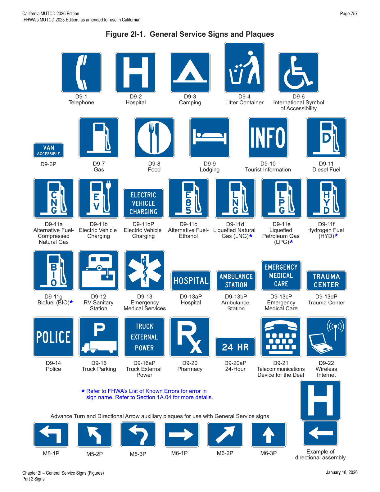
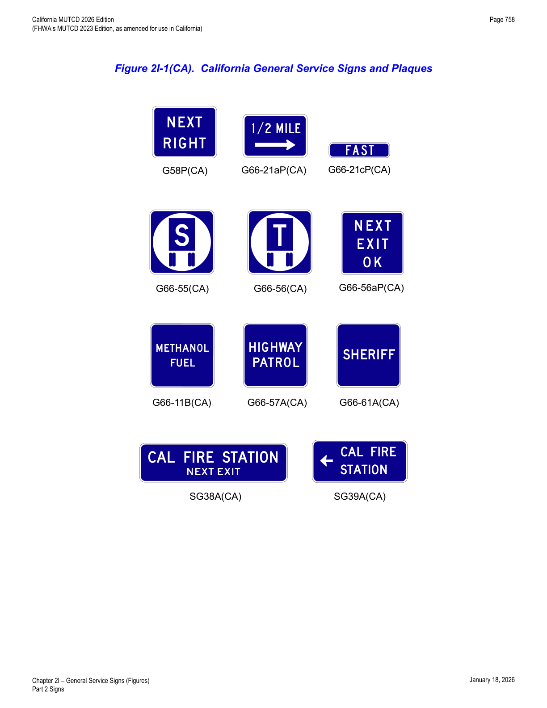
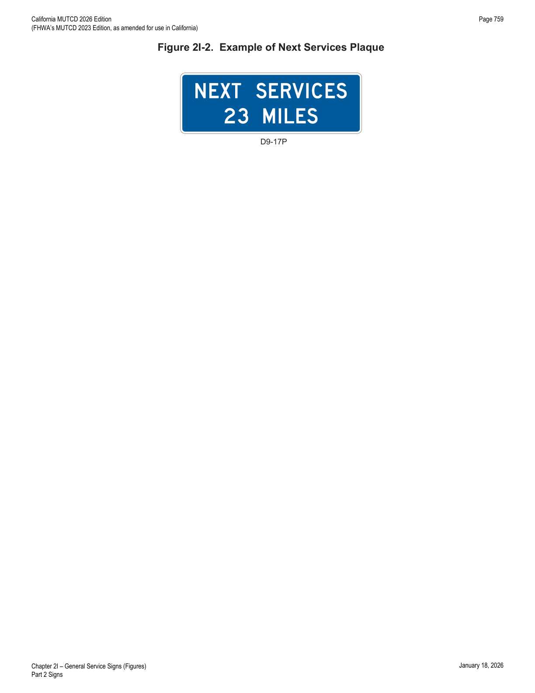
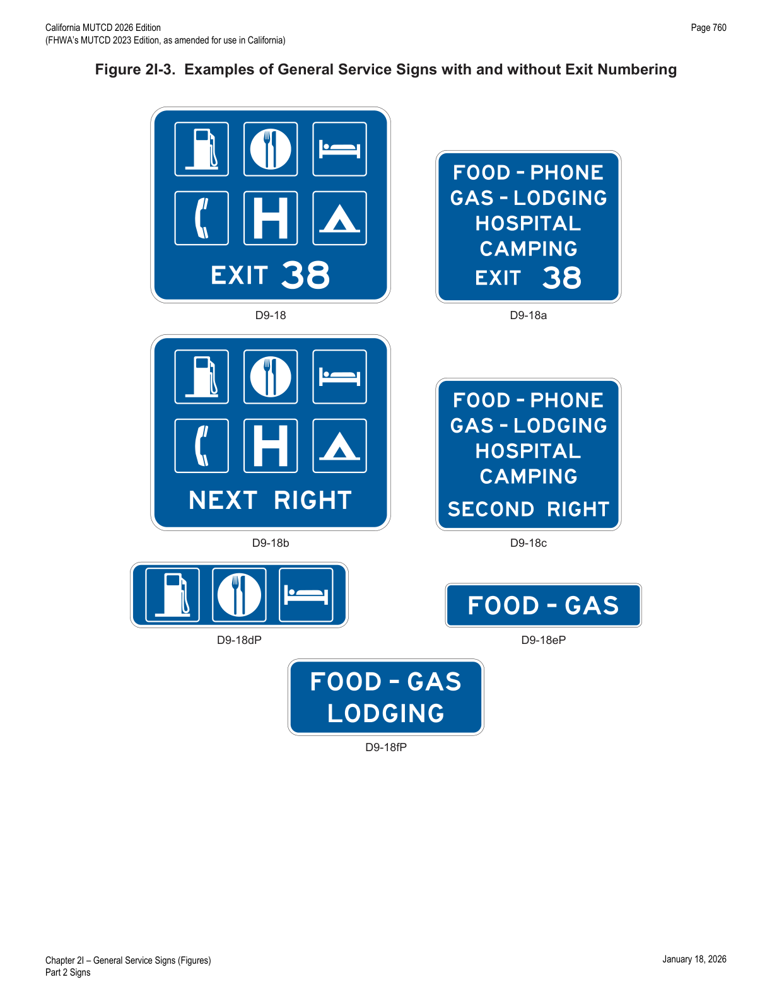
2I.04Interstate Oasis Signing (D5-12 Series)
- 01An Interstate Oasis is a facility near an Interstate highway that provides products and services to the public, 24-hour access to public restrooms, and parking for automobiles and heavy trucks. Interstate Oasis guide signs inform road users on Interstate highways as to the presence of an Interstate Oasis at an interchange and which businesses have been designated by the State within which they are traveling as having met the eligibility criteria of the Federal Highway Administration's Interstate Oasis policy (dated October 18, 2006).
- 02If a State elects to provide or allow Interstate Oasis signing (see Figure 2I-4), there should be a statewide policy, program, procedures, and criteria for the designation and signing of a facility as an Interstate Oasis that complies with the FHWA's policy and with the provisions of this Section.
- 03States electing to provide or allow Interstate Oasis signing should use the following signing practices on the freeway for any given exit to identify the availability of a designated Interstate Oasis: (A) if adequate sign spacing allows, a separate Interstate Oasis (D5-12) sign should be installed in an effective location with spacing of at least 800 feet from other adjacent guide signs, including any Specific Service signs, located upstream from the Advance Guide sign or between the Advance Guide sign and the Exit Direction sign, and should display the words INTERSTATE OASIS and the exit number or, for an unnumbered interchange, an action message such as NEXT RIGHT; (B) if the spacing of other guide signs precludes a separate sign, an INTERSTATE OASIS (D5-12aP) supplemental plaque should be mounted below an existing D9-18 series General Service sign for the interchange.
- 04If Specific Service signing is provided at the interchange, a business designated as an Interstate Oasis and having a business identification sign panel on the Food and/or Gas Specific Service signs may use the bottom portion of the business identification sign panel to display the word OASIS.
- 05If Specific Service signing is not provided at the interchange, the name of the business designated as an Interstate Oasis may be displayed on a business identification sign panel, in compliance with the provisions of Sections 2J.03 through 2J.05, below the INTERSTATE OASIS legend on the D5-12 sign.
- 06If Specific Service signs containing the OASIS legend as a part of the business identification sign panel(s) are not used on the ramp and if the Interstate Oasis is not clearly visible and identifiable from the exit ramp, an Interstate Oasis Directional (D5-12b) sign shall be provided on the exit ramp to indicate the direction and distance to the Interstate Oasis.
- 07If needed, additional trailblazer guide signs shall be used along the crossroad to guide road users to an Interstate Oasis.
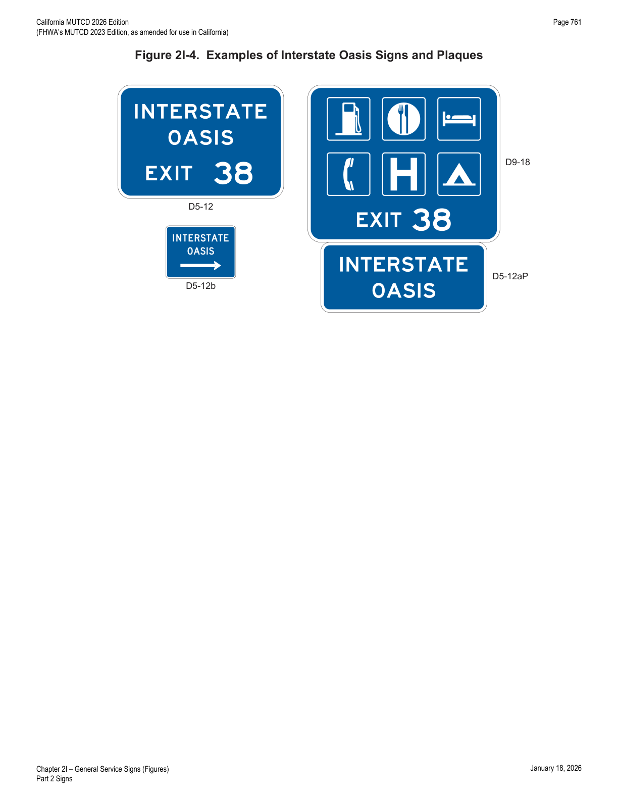
2I.05Rest Area and Other Roadside Area Signs (D5-1 through D5-11 Series)
- 03A roadside area that does not contain restroom facilities should be signed to indicate the major road user service that is provided. For example, an area with only parking should use PARKING AREA (D5-9 series) instead of REST AREA; an area with only picnic tables and parking should use PICNIC AREA, ROADSIDE TABLE, or ROADSIDE PARK (D5-10 series) instead of REST AREA.
- 04Rest areas that have tourist information and welcome centers should be signed as provided in Section 2I.08.
- 05Scenic area signing should be consistent with that provided for rest areas, except that the legends should use words such as SCENIC AREA, SCENIC VIEW, or SCENIC OVERLOOK (D5-11 series) instead of REST AREA.
- 06If a rest area or other roadside area is provided on a conventional road, a D5-1 and/or D5-1a sign should be installed in advance of the rest area or other roadside area to permit the driver to reduce speed in preparation for leaving the highway. A D5-5 sign (or a D5-2 sign if an exit ramp is provided) should be installed at the turn-off point where the driver needs to leave the highway to access the rest area or other roadside area.
- 07If a rest area or other roadside area is provided on a freeway or expressway, a D5-1 sign should be placed 1 mile and/or 2 miles in advance of the rest area.
- 07aWhen rest areas are provided (or planned) on the same route, a NEXT REST (XX MILES) plaque (G79aP(CA)) shall be placed below the REST AREA (XX MILES) (D5-1) sign.
- 08A D5-2a sign shall be placed at the rest area or other roadside area exit gore.
- 09A D5-1a sign may be placed between the D5-1 sign and the exit gore on a freeway or expressway. A second D5-1 sign may be used in place of the D5-1a sign with a distance to the nearest ½ or ¼ mile displayed as a fraction rather than a decimal for distances of less than 1 mile.
- 10To provide the road user with information on the location of succeeding rest areas, a Next Rest Area (D5-6) sign (see Figure 2I-5) may be installed independently or as a supplemental sign mounted below one of the REST AREA advance guide signs.
- 12If the rest area has facilities for persons with disabilities (see Section 2I.02), the International Symbol of Accessibility (D9-6) sign (see Figure 2I-1) may be placed with or beneath an advance guide sign for the rest area.
- 13If telecommunication devices for the deaf (TDD) are available at the rest area, the TDD (D9-21) symbol sign (see Figure 2I-1) may be used to supplement the advance guide signs for the rest area.
- 14If wireless Internet services are available at the rest area, the Wireless Internet (D9-22) symbol sign (see Figure 2I-1) may be used to supplement the advance guide signs for the rest area.
- 15The PATROLLED BY HIGHWAY PATROL (G80B(CA)) sign may be used below the REST AREA (D5-2) sign where the California Highway Patrol has made an agreement with Caltrans to patrol a specific rest area.
- 16The Highway Patrol PARKING ONLY (S34(CA)) sign may be used in a Safety Roadside Rest Area to designate a parking stall(s) dedicated for California Highway Patrol vehicles only. The S34(CA) sign may be supplemented with a "CHP" pavement marking.
- 17When used, the pavement marking should be located so that it is visible when a vehicle is parked in the space.
- 18The Rest Area/Vista Point 8 HOUR PARKING (S23(CA)) sign may be used to discourage extended stays in roadside rests or vista points for noncommercial vehicles. The 10-HOUR PARKING COMMERCIAL MOTOR VEHICLES (R39-3(CA)) sign may be used to allow ten total hours for parking for commercial vehicles. Refer to CVC §§ 22651(s)1 and 22651(s)2.
- 19The NO SOLICITING (S24(CA)) sign may be used to prohibit the vending of merchandise, foodstuff, or services and the soliciting of money within any roadside rest areas or vista points. Refer to SHC § 225.5.
- 20The ALT FUEL VEHICLE PARKING ONLY (R116(CA)) sign may be used in a public parking facility or a park-and-ride lot to designate a parking stall(s) dedicated for alternatively fueled vehicles only.
- 21Public Resource Code § 25722.9(a) defines "alternatively fueled vehicles" as light-, medium-, and heavy-duty vehicles that reduce petroleum usage and related emissions by using advanced technologies and fuels, including those vehicles described in § 5205.5 of the CVC.
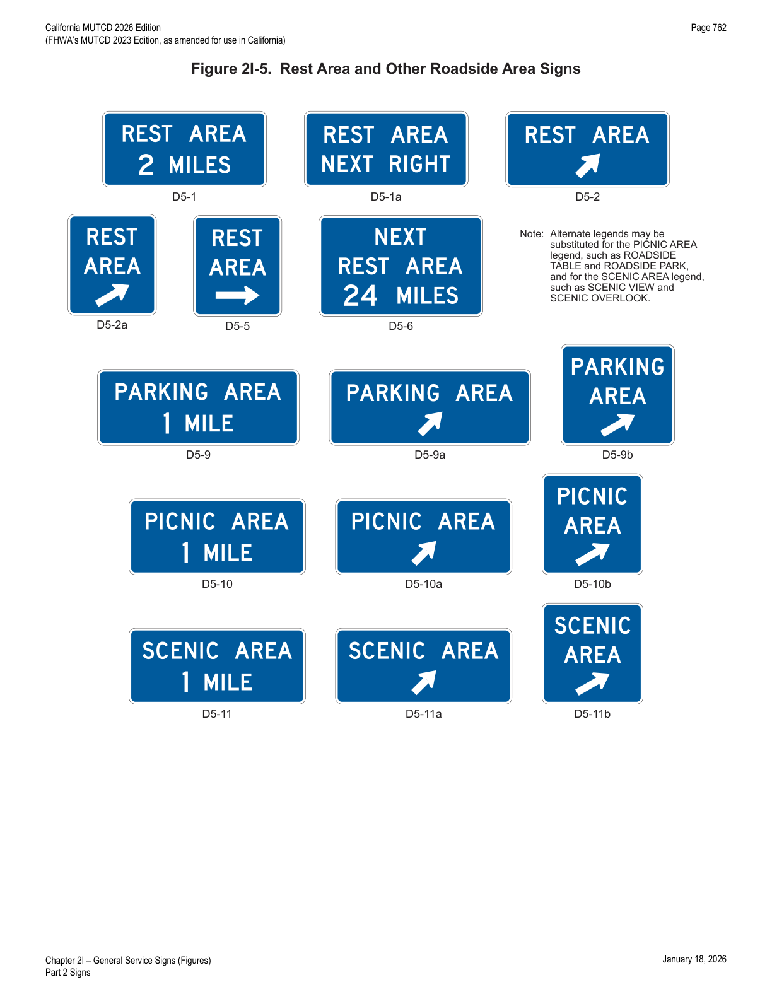
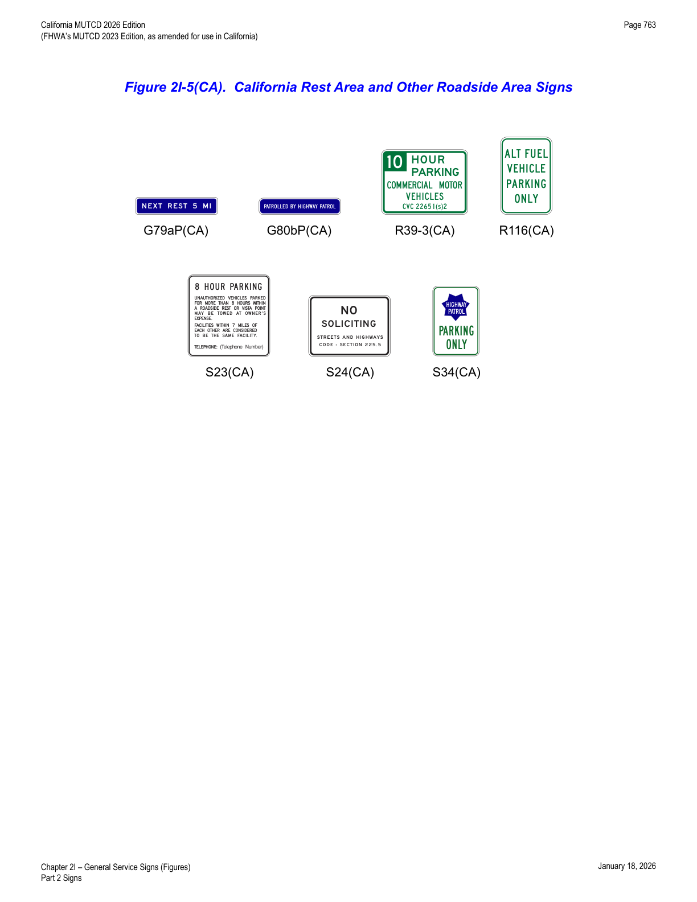
2I.06Brake Check Area Signs (D5-13 and D5-14)
- 01If an area has been provided for drivers to pull off of the roadway to check the brakes on their vehicle, a Brake Check Area Advance (D5-13) sign (see Figure 2I-6) should be installed in advance of the brake check area.
- 02The Brake Check Area (G66-58(CA)) sign (see Figure 2I-6(CA)) is provided to give notice to motorists, particularly truck operators, of an area provided to allow vehicle operators to stop and check the condition and adjustment of their brakes. These areas are generally provided just prior to a significant downgrade.
2I.07Chain-Up Area Signs (D5-15 and D5-16)
- 01If an area has been provided for drivers to pull off of the roadway to install chains on their tires, a Chain-Up Area Advance (D5-15) sign (see Figure 2I-6) should be installed in advance of the chain-up area, and a D5-16 sign (see Figure 2I-6) should be placed at the entrance to the chain-up area.
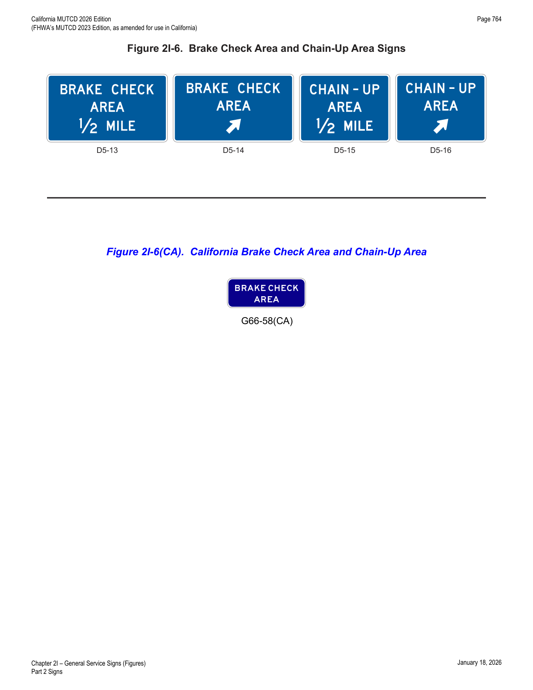
2I.08Tourist Information and Welcome Center Signs (D5-7 Series and D5-8)
- 01Tourist information and welcome centers have been constructed within rest areas on freeways and expressways and are operated by either a State or a private organization. Others have been located within close proximity to these facilities and operated by civic clubs, chambers of commerce, or private enterprise.
- 02The number of supplemental sign panels installed with Tourist Information or Welcome Center signs should be limited to three so as not to impose an undue informational load on the road user.
- 03Tourist Information or Welcome Center signs (see Figure 2I-7 and Figure 2I-7(CA)) shall have a white legend and border on a blue background. Continuously staffed or unstaffed operation at least 8 hours per day, 7 days per week, shall be required.
- 04If operated only on a seasonal basis, the Tourist Information or Welcome Center signs shall be removed or covered during the off seasons.
- 05For freeway or expressway rest area locations that also serve as tourist information or welcome centers, the following signing criteria should be used: (A) the locations for tourist information and welcome center Advance Guide, Exit Direction, and Exit Gore signs should meet the General Service signing requirements described in Section 2I.03; (B) if signing for the tourist information or welcome center is accomplished in conjunction with the initial rest area signing, the message on the Rest Area Tourist Info Center Advance (D5-7) sign should be REST AREA, TOURIST INFO CENTER, XX MILES or REST AREA, STATE NAME (optional), WELCOME CENTER XX MILES — and on the Rest Area Tourist Info Center Entrance Direction (D5-8) sign, the message should be REST AREA, TOURIST INFO CENTER with a diagonally upward-pointing directional arrow (or NEXT RIGHT), or REST AREA, STATE NAME (optional), WELCOME CENTER with a diagonally upward-pointing directional arrow (or NEXT RIGHT); (C) if the initial rest area Advance Guide and Exit Direction signing is already in place, these signs should include, on supplemental signs, the legend TOURIST INFO CENTER or STATE NAME (optional), WELCOME CENTER; (D) the Exit Gore sign should contain only the legend REST AREA with the arrow and should not be supplemented with any legend pertaining to the tourist information center or welcome center.
- 06As an alternative to the supplemental TOURIST INFO CENTER legend, the Tourist Information (D9-10) sign (see Figure 2I-1) may be appended beneath the REST AREA advance guide sign.
- 07The name of the State or local jurisdiction may appear on the Advance Guide and Exit Direction tourist information/welcome center signs if the jurisdiction controls the operation of the tourist information or welcome center and the center meets the operating criteria set forth in this Manual and is consistent with State policies.
- 08For tourist information centers that are located off the freeway or expressway facility, additional signing criteria should be as follows: (A) each State should adopt a policy establishing the maximum distance that a tourist information center can be located from the interchange in order to be included on official signs; (B) the location of signing should be in accordance with requirements pertaining to General Service signing (see Section 2I.03); (C) signing along the crossroad should be installed to guide the road user from the interchange to the tourist information center and back to the interchange.
- 09As an alternative, the Tourist Information (D9-10) sign (see Figure 2I-1) may be appended to the guide signs for the exit that provides access to the tourist information center. As a second alternative, the Tourist Information sign may be combined with General Service signing.
Tourist Information Signs (G81-21(CA) and G81-24(CA))
- 10The TOURIST INFORMATION (G81-21(CA) and G81-24(CA)) signs may be placed directing to off-highway facilities.
- 11These signed facilities need to have a principal function of providing local tourist information. Those facilities provided by local chamber of commerce (or other official body) representing a group of people or businesses need to be given initial priority for signing.
- 12The G81-21(CA) or G81-24(CA) signs should be placed on State highways only where privately-owned off-highway signs would not reasonably provide adequate directions to motorists. These signs should be restricted to those facilities which are spaced no closer than 15 miles apart in each direction along any highway. An excessive number of supplemental panels should not be installed with Tourist Information or Welcome Center signs so as not to overload the road user.
- 13These signs should be placed beneath another primary guide sign.
- 14If no guide signs are available, the G81-21(CA) or G81-24(CA) signs may be placed as separate installations.
- 15Facilities should be within 0.5 miles of the highway and have reasonably direct access from, and return to, the highway.
- 16Facilities should provide lighting, telephone and information on a 24-hour basis and cover the entire area served. Information should include area and regional maps, and 24-hour service information including, but not limited to, medical, police, fire, restrooms, auto repair service and fuel. Outside maps and displays must be provided at all manned centers for use during periods when the facility is not manned.
- 17Facilities should have adequate on-premise and off right-of-way signing, where necessary, denoting "Tourist Information." Displays should be professionally designed and constructed and provide resistance to fading, chipping and vandalism.
- 18For freeway or expressway rest area locations that also serve as tourist information centers, the following signing criteria should be used: (A) the locations for the Advance Guide (G83(CA) Series), Exit Direction (G85(CA) Series), and Exit Gore (E5-1) signs should meet the General Service signing requirements; (B) the TOURIST INFORMATION (G81-21(CA) and G81-24(CA)) signs should be placed beneath the REST AREA (D5-2) sign or other primary guide sign (or as a separate installation if no guide signs are available); (C) the gore sign should contain only the legend REST AREA with the arrow and should not be supplemented with any legend pertaining to the tourist information.
California Welcome Center Signs (SG47(CA) Series)
- 19The CALIFORNIA WELCOME CENTER (SG47(CA) Series) signs may be placed directing to a statewide network of visitor information centers as designated by the California Office of Tourism to encourage tourism in California and provide benefits to the State economy.
- 20The facilities signed need to have a principal function of providing statewide tourist information. Designated centers can include, but are not limited to, centers operated by convention centers and visitor bureaus, chambers of commerce, federal, state or local governments, or private entities.
- 21Designation of an entity as a California Welcome Center shall be based on conditions established by the Office of Tourism through written agreement with the entity.
- 22The SG47(CA) Series signs shall have a yellow welcome center logo, and a white legend and border on a blue background.
- 23The SG47(CA) Series signs should be placed as separate installations with the individual welcome centers being charged directly for the initial and ongoing cost and fees related to production, maintenance and permitting of the signs.
- 24Facilities should be within 3 miles in urban areas and 5 miles in rural areas of a State highway and have reasonably direct access from, and return to, the highway.
- 25Follow-up signing or trail blazers, if necessary, shall be placed by local jurisdictions before these signs are placed on the State highway.
- 26If operated only on a seasonal basis, where criteria cannot be met during closed periods, signs shall be covered or removed as directed by the Office of Tourism.
- 27The CALIFORNIA WELCOME CENTER X MILES (SG47A(CA)) sign may be placed on the nearest freeway approximately 2 miles, or more as appropriate, in advance of the exit to a California Welcome Center that has been established under the authority of the California Office of Tourism.
- 28The CALIFORNIA WELCOME CENTER NEXT RIGHT (SG47B(CA)) sign may be placed on the nearest freeway, at the appropriate exit to a California Welcome Center.
- 29The CALIFORNIA WELCOME CENTER with Arrow (SG47C(CA)) sign may be placed at a freeway ramp terminal, conventional highway or local road to provide direction to a California Welcome Center.
- 30The CALIFORNIA WELCOME CENTER X MILES with Arrow (SG47D(CA)) sign may be placed at a freeway ramp terminal to provide direction and distance to a California Welcome Center.
- 31The distance on the SG47D(CA) sign should be no more than 3 miles from the State highway.
- 32The Welcome Center will be charged directly for the initial and ongoing cost and fees related to production, maintenance and permitting of the SG47A(CA), SG47B(CA), SG47C(CA) and SG47D(CA) signs.
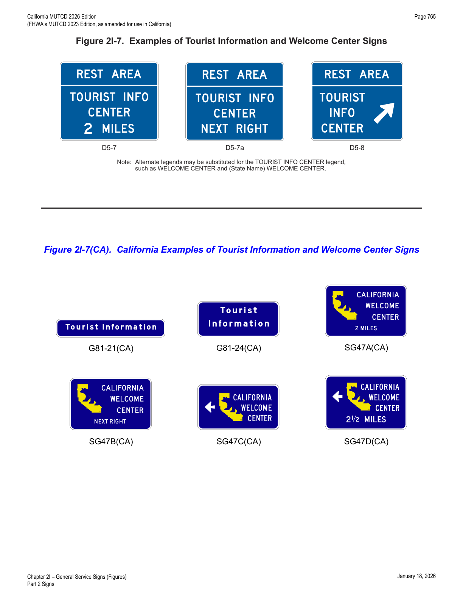
2I.09Radio Information Signing (D12-1 Series)
- 01A Radio-Weather Information (D12-1) sign (see Figure 2I-8) may be used in areas where difficult driving conditions commonly result from weather systems. Radio-Traffic Information (D12-1a) signs may be used in conjunction with traffic management systems.
- 02Radio-Weather and Radio-Traffic Information signs shall have a white legend and border on a blue background. Only the numerical indication of the radio frequency shall be used to identify a station broadcasting travel-related weather or traffic information. Stations shall broadcast on AM or FM frequencies licensed by the Federal Communications Commission (FCC) for traveler information stations. No more than three frequencies shall be displayed on each sign. Only radio stations whose signal will be of value to the road user and who agree to broadcast either (A) periodic weather warnings at a rate of at least once every 15 minutes during periods of adverse weather, or (B) driving condition information (affecting the roadway being traveled) at a rate of at least once every 15 minutes, or when required, during periods of adverse traffic conditions and when supplied by an official agency having jurisdiction, shall be identified on Radio-Weather and Radio-Traffic Information signs.
- 03If a station to be considered operates only on a seasonal basis, its signs shall be removed or covered during the off season.
- 04The radio station should have a signal strength to adequately broadcast at least 70 miles along the route. Signs should be spaced as needed for each direction of travel at distances determined by an engineering study. The stations to be included on the signs should be selected in cooperation with the association(s) representing major broadcasting stations in the area to provide (1) maximum coverage to all road users on both AM and FM frequencies, and (2) consideration of 24 hours per day, 7 days per week broadcast capability.
- 05The URGENT MESSAGE WHEN FLASHING (D12-1bP) plaque may be mounted below the D12-1 or D12-1a sign if supplemented by Warning Beacons (see Section 4S.03) that flash only when a message related to adverse travel conditions is being broadcast.
- 05aThe WHEN FLASHING (G81-64aP(CA)) plaque may be used with the D12-1, D12-1a, and the G81-65(CA) sign when messages are not broadcast full time and to accommodate "real-time" usage.
- 05bThe G81-64aP(CA) plaque should be placed with flashing yellow beacons above and on the same posts with the D12-1 and D12-1a sign.
- 06In roadway rest area locations, a smaller sign using a greater number of radio frequencies, but of the same general design, may be used.
- 07Radio-Weather and Radio-Traffic Information signs installed in rest areas shall be positioned such that they are not visible from the main roadway.
- 08There are three types of radio information signs: (1) Radio-Weather Information (D12-1); (2) Radio-Traffic Information (D12-1a); and (3) Radio-Recreational Information (G81-65(CA)).
Radio – Traffic Information (D12-1a)
- 09The D12-1a sign may be used to inform motorists of broadcasts about traffic conditions for highways and public inter-modal transportation facilities.
- 10The radio station needs to be operated by the public agency having jurisdiction over the transportation facility. The agency operating the station will be responsible for monitoring and maintaining the system and changing the message content as situations warrant.
Radio – Recreation Information (G81-65(CA))
- 11The G81-65(CA) sign (see Figure 2I-8(CA)) may be used on rural highways to inform travelers of broadcasts about State or federal parks and recreational facilities.
- 12The G81-65(CA) sign shall have a white legend and border on a brown background. The sign and sign structure shall be free of extraneous messages or logos, and must stand alone with no external lights or flashing beacons. Only the numerical indication of the radio frequency shall be used to identify a station. No more than three frequencies shall be shown on each sign. Only radio stations whose signal will be of value to the road user and who agree to broadcast in accordance with the following shall be identified on this sign: (A) provides information about State or federal recreational facilities located in rural areas; (B) message content is devoted to public highway purposes; (C) broadcasts operate 24 hours per day and 7 days per week; (D) broadcasts contain no commercial messages.
- 13For installation of the G81-65(CA) sign on State highways, the sign needs to be installed by the permittee through Caltrans' encroachment permit process. The costs, conditions of operation, and specific message content needs to be clearly specified in the encroachment permit subject to the following terms and conditions: (A) the permittee is the State or federal agency that owns and/or operates the recreational facility; (B) the permittee possesses a valid FCC license to operate the radio station as a traveler information station; (C) the permittee is responsible for the accuracy of the message and message content; (D) the permittee bears all costs, including but not limited to FCC approval and licensing, fabrication and installation of signs, and the installation, operation and maintenance of appurtenant radio equipment and facilities.
2I.10Channel 9 Monitored Sign (D12-3)
- 01A Channel 9 Monitored (D12-3) sign (see Figure 2I-8) may be installed as needed. Official public agencies or their designees may be displayed as the monitoring agency on the sign.
- 02Only official public agencies or their designee shall be displayed as the monitoring agency on the Channel 9 Monitored sign.
2I.11EMERGENCY CALL 911 Sign (D12-4)
- 01An EMERGENCY CALL 911 (D12-4) sign (see Figure 2I-8) may be used for cellular telephone communications.
- 01bThe D12-4 sign should be installed as a separate installation in an appropriate location following the Welcome To California (G10B(CA)) sign.
- 02The EMERGENCY CALL 9-1-1 (G81-61P(CA)) plaque (see Figure 2I-8(CA)) may be placed below all new Unincorporated Community (G9-2(CA)), City Limit (G9-5(CA)) and Jurisdictional Boundary (I2-1) signs. The G81-61P(CA) plaque may also be placed below existing G9-2(CA), G9-5(CA) and I2-1 signs when they are changed for other purposes, such as updating population figures. The G81-61P(CA) plaque may be shorter than the sign panel under which it is placed.
- 03The G81-61P(CA) plaque should not be longer than the G9-2(CA), G9-5(CA) and I2-1 sign panel under which it is placed.
- 04The letter size used in the G81-61P(CA) sign shall not exceed that of the words "City Limit" on the G9-5(CA) sign or the words "COUNTY LINE" on the I2-1 sign.
2I.12TRAVEL INFO CALL 511 Signs (D12-5 and D12-5a)
- 01A TRAVEL INFO CALL 511 (D12-5 or D12-5a) sign (see Figure 2I-8) may be installed if a 511 travel information services telephone number is available to road users for obtaining traffic, public transportation, weather, construction, or road condition information.
- 02The pictograph of the transportation agency or the travel information service or program that is providing the travel information may be displayed in place of the 511 pictograph on the D12-5 sign above the TRAVEL INFO CALL 511 legend.
- 03The logo of a commercial entity shall not be incorporated within the TRAVEL INFO CALL 511 signs.
- 04If the pictograph of the transportation agency or the travel information service or program is used in place of the 511 pictograph on the D12-5 sign (see Paragraph 2 of this Section), the maximum height of the pictograph shall not exceed the height of the 511 pictograph on the standard sign size specified for the roadway classification in Table 2H-1.
- 05The TRAVEL INFO CALL 511 signs shall have a white legend and border on a blue background.
2I.13Roadside Assistance Sign (D12-6)
- 01A Roadside Assistance (D12-6) sign (see Figure 2I-8) displaying the Highway Assistance cellular telephone code designated for that roadway or jurisdiction may be used along a highway that is served by an authorized roadside assistance program with authorized service vehicles and personnel that provide roadside vehicle repair assistance to road users free of charge.
- 02The Roadside Assistance Sign (D12-6) may be installed on freeways if a Service Authority for Freeway Emergencies (SAFE) has established a mobile call box program, which is available to road users for obtaining roadside assistance such as tow service.
- 03The pictograph of the SAFE that is providing the roadside assistance or the logo of a commercial entity shall not be incorporated within the sign.
- 04The "###" shall be replaced with the mobile call number applicable to the SAFE providing the roadside assistance.
- 05The Post Mile plaque (SG49dP(CA)) shall be placed below the D12-6 sign to indicate the county, route, and post mile.
- 06A call box identification number (see Section 2I.03, Paragraph 72) may be included on the sign for location identification purposes when the sign has been placed at a location where a call box has been removed.
2I.14Carpool and Ridesharing Signing (D12-2)
- 01In areas having carpool matching services, a Carpool Information (D12-2) sign (see Figure 2I-8) may be provided adjacent to highways with preferential lanes or along any other highway.
- 02Carpool Information signs may include an Internet domain name or telephone number of more than four characters within the legend.
- 03If a local transit pictograph or carpool symbol is incorporated into the Carpool Information sign, the maximum vertical dimension of the pictograph or symbol shall not exceed 18 inches and the maximum horizontal dimension shall not exceed 30 inches.
- 04The Ridesharing Information (SG19(CA)) sign (see Figure 2I-8(CA)) may be placed at selected locations for incoming traffic in urban areas.
- 05The Park & Ride Facility Information (SG20(CA)) sign (see Figure 2I-8(CA)) may be used to identify park and ride facilities provided for the use of car-poolers and transit users.
- 06For freeways and expressways, the D12-2, SG19(CA), and SG20(CA) sign locations should be no closer than 10 miles apart.
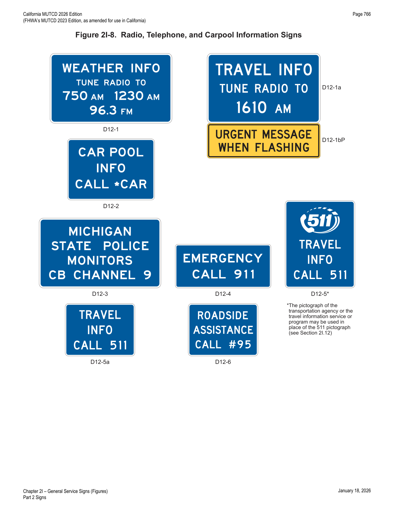
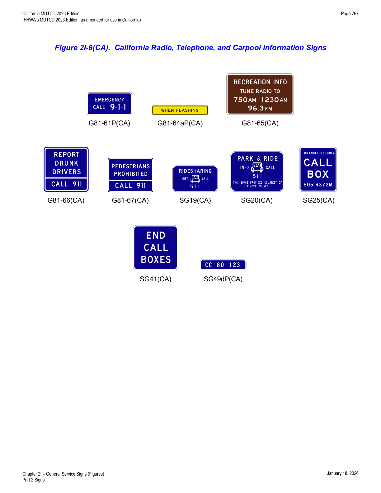
2I.15Signing for Truck Parking Availability (D9-16b through D9-16e)
- 01General Service signs may be used to display the number of available truck parking spaces at roadside areas such as rest areas, welcome centers, and weigh stations, and at facilities off a highway that are open to the public and provide parking for commercial vehicles 24 hours per day, 7 days per week.
- 02The Truck Parking Availability General Service (D9-16b through D9-16e) signs (see Figure 2I-9) shall include a changeable message element with a white changeable legend on a black opaque background that displays only the number of parking spaces currently available at each location or the legend FULL. The upper section of the sign shall display the Truck Parking (D9-16) symbol sign and the legend SPACES OPEN. The sign shall display the number of available truck parking spaces for no more than three parking facilities. Where two lines of legend, such as the location and a distance, are displayed for a parking facility, not more than two parking facilities shall be displayed on the sign.
- 03Where the truck parking facility is located off the main highway and is accessed from the crossroad, directional assemblies with the Truck Parking (D9-16) sign shall be installed along the ramp and along crossroads where the route to the facility requires a turn, where it is unclear as to which roadway to follow, or where additional guidance is needed.
- 04Displaying the number of parking spaces available at a facility when the number is low could result in truckers choosing to continue to a distant facility that no longer has available space by the time they arrive.
- 05The word FULL in a white legend may be displayed on changeable message elements of a Truck Parking Availability General Service sign when the number of truck parking spaces available at the associated facility reaches a predetermined lower threshold.
- 06Truck Parking Availability signs should be located 3 to 5 miles in advance of the nearest parking facility. The parking facilities displayed on the sign should be no more than 60 miles from the sign location.
- 07Examples of uses of Truck Parking Availability signs are shown in Figure 2I-10.
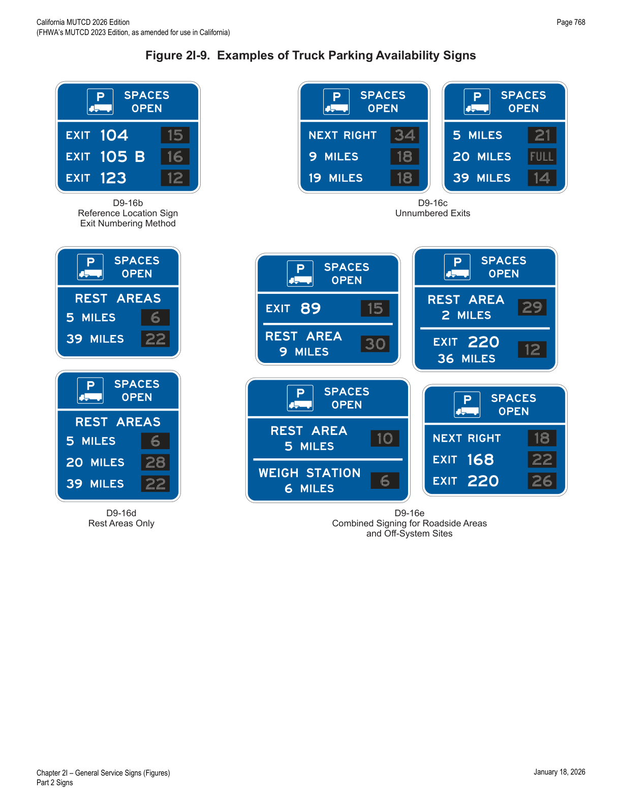
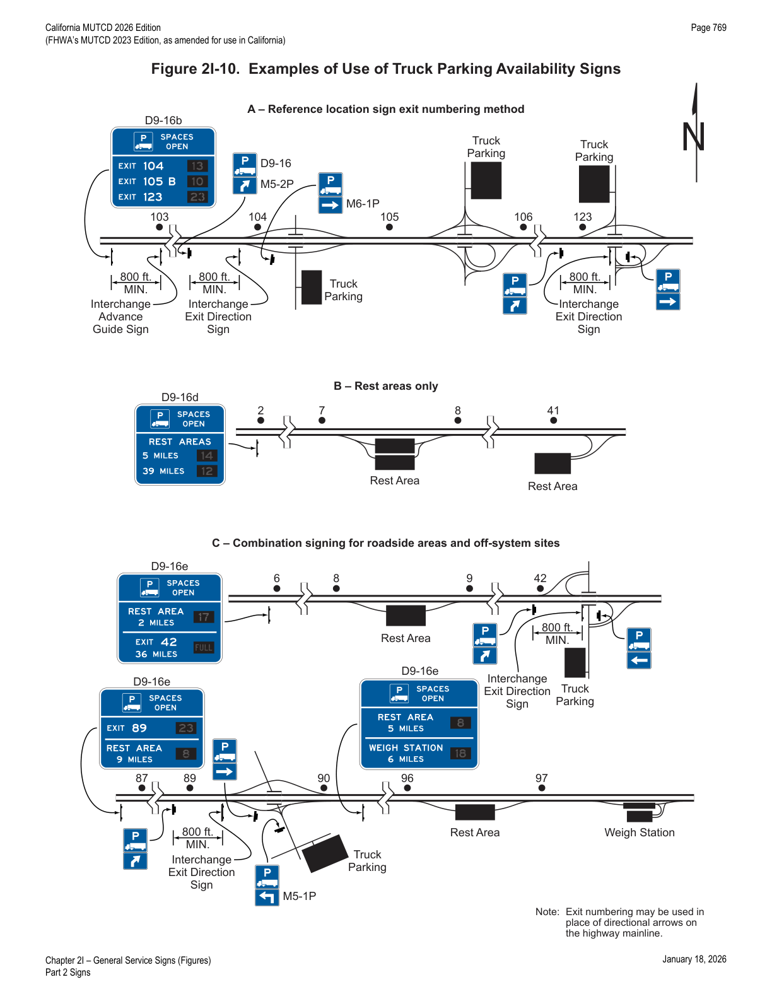
2I.101(CA)REPORT DRUNK DRIVERS CALL 911 (G81-66(CA)) Sign
- 01The REPORT DRUNK DRIVERS CALL 911 (G81-66(CA)) sign (see Figure 2I-8(CA)) may be installed on the roadway for safety enhancement.
2I.102(CA)PEDESTRIANS PROHIBITED CALL 911 (G81-67(CA)) Sign
- 01When pedestrians are prohibited on the roadway, the PEDESTRIANS PROHIBITED CALL 911 (G81-67(CA)) sign (see Figure 2I-8(CA)) may be installed to report the presence of pedestrians on highways by calling 911 to improve roadway safety.
| Sign or Plaque | Designation | Section | Conventional Road | Freeway or Expressway |
|---|---|---|---|---|
| Rest Area Advance | D5-1 | 2I.05 | 78 x 36* | 132 x 60* (F); 114 x 48* (E) |
| Rest Area Advance Direction | D5-1a | 2I.05 | 78 x 36* | 132 x 60* (F); 114 x 48* (E) |
| Rest Area Entrance Direction | D5-2 | 2I.05 | 78 x 36* | 132 x 66* (F); 114 x 60 (E) |
| Rest Area Gore | D5-2a | 2I.05 | 42 x 48* | 78 x 78* (F); 66 x 72* (E) |
| Rest Area Directional | D5-5 | 2I.05 | 42 x 48* | — |
| Next Rest Area | D5-6 | 2I.05 | 78 x 54* | 132 x 78* (F); 108 x 66* (E) |
| Rest Area Tourist Info Center Advance | D5-7 | 2I.08 | 90 x 72* | 156 x 108* (F); 132 x 96* (E) |
| Rest Area Tourist Info Center Advance Direction | D5-7a | 2I.08 | 90 x 72* | 156 x 108* (F); 132 x 96* (E) |
| Rest Area Tourist Info Center Entrance Direction | D5-8 | 2I.08 | 84 x 72* | 138 x 108* (F); 120 x 96* (E) |
| Parking Area Advance | D5-9 | 2I.05 | 96 x 36* | 162 x 60* (F); 138 x 48* (E) |
| Parking Area Entrance Direction | D5-9a | 2I.05 | 96 x 36* | 162 x 60* (F); 138 x 54* (E) |
| Parking Area Gore | D5-9b | 2I.05 | 62 x 48* | 108 x 78* (F); 88 x 66* (E) |
| Picnic Area (Roadside Table, Roadside Park) Advance | D5-10 | 2I.05 | 84 x 36* | 144 x 60* (F); 120 x 48* (E) |
| Picnic Area Entrance Direction | D5-10a | 2I.05 | 84 x 36* | 144 x 60* (F); 120 x 54* (E) |
| Picnic Area Gore | D5-10b | 2I.05 | 54 x 48* | 92 x 78* (F); 76 x 66* (E) |
| Scenic Area (Scenic View, Scenic Overlook) Advance | D5-11 | 2I.05 | 84 x 36* | 144 x 60* (F); 120 x 48* (E) |
| Scenic Area Entrance Direction | D5-11a | 2I.05 | 84 x 36* | 144 x 60* (F); 120 x 54* (E) |
| Scenic Area Gore | D5-11b | 2I.05 | 54 x 48* | 92 x 78* (F); 76 x 66* (E) |
| Interstate Oasis | D5-12 | 2I.04 | — | 198 x 60 (F); 162 x 48 (E) |
| Interstate Oasis (plaque) | D5-12aP | 2I.04 | — | 114 x 48 |
| Interstate Oasis Directional | D5-12b | 2I.04 | — | 48 x 36 |
| Brake Check Area Advance | D5-13 | 2I.06 | 96 x 54 | 132 x 66 |
| Brake Check Area Entrance Direction | D5-14 | 2I.06 | 96 x 54 | 132 x 78 |
| Chain-Up Area Advance | D5-15 | 2I.07 | 72 x 54 | 102 x 66 |
| Chain-Up Area Entrance Direction | D5-16 | 2I.07 | 72 x 54 | 102 x 78 |
| Telephone | D9-1 | 2I.02 | 24 x 24 | 30 x 30 |
| Hospital | D9-2 | 2I.02 | 24 x 24 | 30 x 30 |
| Camping | D9-3 | 2I.02 | 24 x 24 | 30 x 30 |
| Litter Container | D9-4 | 2I.02 | 24 x 30 | 36 x 48 |
| International Symbol of Accessibility | D9-6 | 2I.02 | 24 x 24 | 30 x 30 |
| Van Accessible (plaque) | D9-6P | 2I.02 | 18 x 9 | — |
| Gas | D9-7 | 2I.02 | 24 x 24 | 30 x 30 |
| Food | D9-8 | 2I.02 | 24 x 24 | 30 x 30 |
| Lodging | D9-9 | 2I.02 | 24 x 24 | 30 x 30 |
| Tourist Information | D9-10 | 2I.02 | 24 x 24 | 30 x 30 |
| Diesel Fuel | D9-11 | 2I.02 | 24 x 24 | 30 x 30 |
| Alternative Fuel – Compressed Natural Gas | D9-11a | 2I.02 | 24 x 24*** | 30 x 30*** |
| Electric Vehicle Charging | D9-11b | 2I.02 | 24 x 24*** | 30 x 30*** |
| Electric Vehicle Charging (plaque) | D9-11bP | 2I.02 | 24 x 18 | 30 x 24 |
| Alternative Fuel – Ethanol | D9-11c | 2I.02 | 24 x 24 | 30 x 30 |
| Alternative Fuel – Liquefied Natural Gas | D9-11d | 2I.02 | 24 x 24*** | 30 x 30*** |
| Alternative Fuel – Liquefied Petroleum Gas | D9-11e | 2I.02 | 24 x 24*** | 30 x 30*** |
| Alternative Fuel – Hydrogen | D9-11f | 2I.02 | 24 x 24*** | 30 x 30*** |
| Alternative Fuel – Biofuel | D9-11g | 2I.02 | 24 x 24 | 30 x 30 |
| RV Sanitary Station | D9-12 | 2I.02 | 24 x 24 | 30 x 30 |
| Emergency Medical Services | D9-13 | 2I.02 | 24 x 24 | 30 x 30 |
| Hospital (plaque) | D9-13aP | 2I.02 | 24 x 12 | 30 x 12 |
| Ambulance Station (plaque) | D9-13bP | 2I.02 | 24 x 12 | 30 x 15 |
| Emergency Medical Care (plaque) | D9-13cP | 2I.02 | 24 x 18 | 30 x 24 |
| Trauma Center (plaque) | D9-13dP | 2I.02 | 24 x 12 | 30 x 15 |
| Police | D9-14 | 2I.02 | 24 x 24 | 30 x 30 |
| Truck Parking | D9-16 | 2I.03 | 24 x 24 | 30 x 30 |
| Truck External Power (plaque) | D9-16aP | 2I.03 | 24 x 24 | 30 x 30 |
| Truck Parking Availability – Exit Number | D9-16b | 2I.15 | Varies x 144 | Varies x 144 |
| Truck Parking Availability – Distance | D9-16c | 2I.15 | Varies x 144 | Varies x 144 |
| Truck Parking Availability – Rest Area | D9-16d | 2I.15 | Varies x Varies | Varies x Varies |
| Truck Parking Availability – Combined | D9-16e | 2I.15 | Varies x Varies | Varies x Varies |
| Next Services Advance (plaque) | D9-17P | 2I.02 | 72 x 24 | 114 x 30 |
| Next EV Charging | D9-17a | 2H, 2J | — | 126 x 60 |
| General Services (up to 6 symbols) with Exit Number | D9-18 | 2I.03 | 108 x 84 | 132 x 114 (F); 132 x 108 (E) |
| General Services with Exit Number | D9-18a | 2I.03 | 72 x 60 | 132 x 108** (F); 102 x 84** (E) |
| General Services (up to 6 symbols) with Action Message | D9-18b | 2I.03 | 108 x 84 | 132 x 114 (F); 132 x 108 (E) |
| General Services with Action Message | D9-18c | 2I.03 | 72 x 60** | 132 x 108** (F); 102 x 84** (E) |
| Rural Interchange General Services (up to 3 symbols) (plaque) | D9-18dP | 2I.03 | — | 120 x 36 |
| Rural Interchange General Services (1 line) (plaque) | D9-18eP | 2I.03 | — | Varies x 24 |
| Rural Interchange General Services (2 line) (plaque) | D9-18fP | 2I.03 | — | Varies x 42 |
| Pharmacy | D9-20 | 2I.02 | 24 x 24 | 30 x 30 |
| 24-Hour (plaque) | D9-20aP | 2I.02 | 24 x 12 | 30 x 12 |
| Telecommunications Device for the Deaf | D9-21 | 2I.02 | 24 x 24 | 30 x 30 |
| Wireless Internet | D9-22 | 2I.02 | 24 x 24 | 30 x 30 |
| Radio – Weather Information | D12-1 | 2I.09 | 84 x 48 | 132 x 84 |
| Radio – Traffic Information | D12-1a | 2I.09 | 96 x 48 | 120 x 60 |
| Urgent Message When Flashing (plaque) | D12-1bP | 2I.09 | 84 x 30 | 108 x 36 |
| Carpool Information | D12-2 | 2I.14 | 60 x 42 | 96 x 66 |
| Channel 9 Monitored | D12-3 | 2I.10 | 84 x 48 | 132 x 84 |
| Emergency Call 911 | D12-4 | 2I.11 | 66 x 30 | 96 x 48 |
| Travel Info Call 511 (pictograph) | D12-5 | 2I.12 | 48 x 60 | 66 x 72 |
| Travel Info Call 511 | D12-5a | 2I.12 | 48 x 36 | 66 x 48 |
| Roadside Assistance | D12-6 | 2I.13 | 60 x 42 | 78 x 54 |
* Size shown is for a sign with a REST AREA, PARKING AREA, PICNIC AREA, SCENIC AREA, and/or TOURIST INFO CENTER legend; adjust appropriately for alternate legends. ** Size shown is for a sign with four lines of services; adjust appropriately. *** The "Standard Highway Signs" publication contains layouts for the 18 x 18-inch and 24 x 24-inch alternative fuels symbol signs mounted with the Alternative Fuels Corridor sign (Section 2H.14). Larger signs may be used when appropriate; where two sizes are shown, the larger is for freeways (F) and the smaller for expressways (E).
| Sign or Plaque | Designation | Section | Conventional Road | Freeway or Expressway |
|---|---|---|---|---|
| Next Right/Left (plaque) | G58P(CA) | 2I.02, 2I.03 | 30 x 24 | 30 x 24 |
| Methanol Fuel | G66-11B(CA) | 2I.03 | 24 x 24 | 30 x 30 |
| Distance with Arrow (plaque) | G66-21aP(CA) | 2I.03 | 24 x 16 | 30 x 18 |
| FAST (Header Plaque) | G66-21cP(CA) | 2I.03 | 24 x 6 | 30 x 8 |
| STAA Truck Service | G66-55(CA) | 2I.03 | 24 x 24 | 30 x 30 |
| STAA Truck Terminal Access | G66-56(CA) | 2I.03 | 24 x 24 | 30 x 30 |
| NEXT EXIT OK (plaque) | G66-56aP(CA) | 2I.03 | 30 x 30 | 30 x 30 |
| Highway Patrol | G66-57A(CA) | 2I.03 | 24 x 24 | 30 x 30 |
| BRAKE CHECK AREA | G66-58(CA) | 2I.06 | VAR x 36 | VAR x 42 |
| Sheriff | G66-61A(CA) | 2I.03 | 24 x 24 | 30 x 30 |
| NEXT REST (X MILE) (plaque) | G79aP(CA) | 2I.05 | 72 x 12 | 144 x 24 |
| PATROLLED BY HIGHWAY PATROL (plaque) | G80bP(CA) | 2I.05 | 72 x 12 | 144 x 24 |
| TOURIST INFORMATION | G81-21(CA) | 2I.08 | 144 x 24 | 204 x 30 |
| TOURIST INFORMATION | G81-24(CA) | 2I.08 | 96 x 42 | 132 x 48 |
| EMERGENCY CALL 9-1-1 (plaque) | G81-61P(CA) | 2I.11 | VAR x 6 | VAR x 18 |
| WHEN FLASHING (plaque) | G81-64aP(CA) | 2I.09 | 84 x 12 | 108 x 18 |
| Radio-Recreation Information | G81-65(CA) | 2I.09 | 84 x 48 | 108 x 66 |
| REPORT DRUNK DRIVERS CALL 911 | G81-66(CA) | 2I.101(CA) | 36 x 36 | 48 x 48 |
| PEDESTRIANS PROHIBITED CALL 911 | G81-67(CA) | 2I.102(CA) | — | 72 x 54 |
| ALT FUEL VEHICLE PARKING ONLY | R116(CA) | 2I.05 | 12 x 18 | — |
| Ridesharing Information | SG19(CA) | 2I.14 | 48 x 30 | 72 x 42 |
| Park & Ride Facility Information | SG20(CA) | 2I.14 | 48 x 36 | 66 x 54 |
| Call Box | SG25(CA) | 2I.03 | 18 x 24 | 30 x 36 |
| CAL FIRE STATION NEXT RIGHT | SG38A(CA) | 2I.03 | 78 x 30 | 102 x 36 |
| CAL FIRE STATION with Arrow | SG39A(CA) | 2I.03 | 48 x 21 | 60 x 30 |
| END CALL BOXES | SG41(CA) | 2I.03 | 36 x 36 | 48 x 48 |
| CALIFORNIA WELCOME CENTER X MILES | SG47A(CA) | 2I.08 | 66 x 48 | 108 x 66 |
| CALIFORNIA WELCOME CENTER NEXT RIGHT | SG47B(CA) | 2I.08 | 66 x 48 | 108 x 66 |
| CALIFORNIA WELCOME CENTER with Arrow | SG47C(CA) | 2I.08 | 42 x 24 | 54 x 30 |
| CALIFORNIA WELCOME CENTER X MILES with Arrow | SG47D(CA) | 2I.08 | 42 x 28 | 54 x 36 |
| Rest Area/Vista Point 8 HOUR PARKING | S23(CA) | 2B.52, 2I.05 | 24 x 24 | — |
| NO SOLICITING | S24(CA) | 2I.05 | 24 x 18 | — |
| Highway Patrol PARKING ONLY | S34(CA) | 2I.05 | 12 x 18 | — |
| 10 HOUR PARKING COMMERCIAL MOTOR VEHICLES | R39-3(CA) | 2B.52, 2I.05 | 24 x 18 | — |
★ Key Takeaways — Chapter 2I
- General Service signs (blue background, white legend) are for conventional roads where services are infrequent, and for freeways/expressways generally away from major interchanges and urban areas — with a strict eligibility scoring system for Food/Lodging (10-point minimum across 5 categories) and specific hour/mileage tests for Gas, Camping, Hospital, and 24-Hour Pharmacy signs.
- Freeway General Service signs are capped at 6 road-user services per sign/assembly, with a fixed word-order convention (FOOD/PHONE top line; GAS/LODGING second line; HOSPITAL, 24-HOUR PHARMACY, CAMPING on separate lines).
- EV Charging and other alternative-fuel General Service signs require Direct Current Fast Chargers per 23 CFR 680.106, operating at least 16 hrs/day, 7 days/week.
- Interstate Oasis signing (D5-12 series) requires FHWA designation; Rest Area, Brake Check, Chain-Up, and Tourist Information/Welcome Center signing each have their own advance/entrance/gore sign sub-families with defined spacing and legend rules.
- California-specific signs extend the base MUTCD toolkit substantially: STAA truck service/terminal access signing (G66-55(CA)/G66-56(CA)), SAFE call boxes with a structured post-mile identification numbering scheme, CAL FIRE station signs, California Welcome Center signs (SG47(CA) series), and 511/roadside assistance signage.
- Truck Parking Availability signs (D9-16b through D9-16e) use changeable-message elements limited to 3 facilities (or 2 if two-line legends are used) and should sit 3–5 miles ahead of the nearest facility, itself no more than 60 miles from the sign.